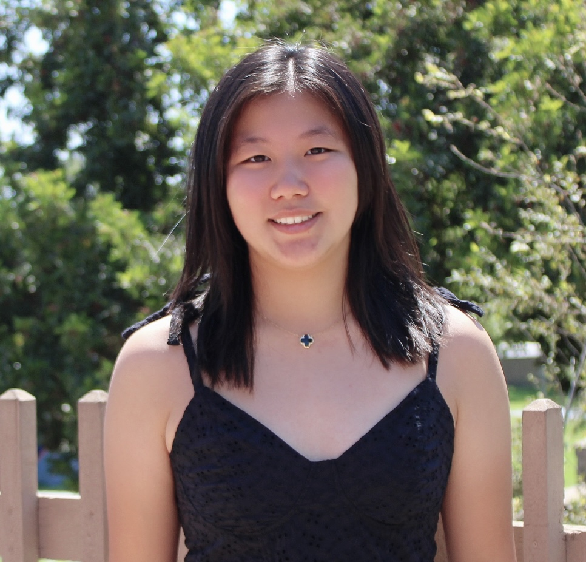
Stephanie Lin
Co-PresidentHello! My name is Stephanie Lin and I am a junior at Whitney High School. My favorite STEM subject is biology because I find it interesting to learn about the little things inside organisms that create the world around us. I first started my experience with Skits as a student of their Stem Immersion Program, during the summer of the pandemic, before becoming involved in providing these exciting opportunities for younger students in the community. Now, as president, I am excited to see SKITS grow over the next few years!
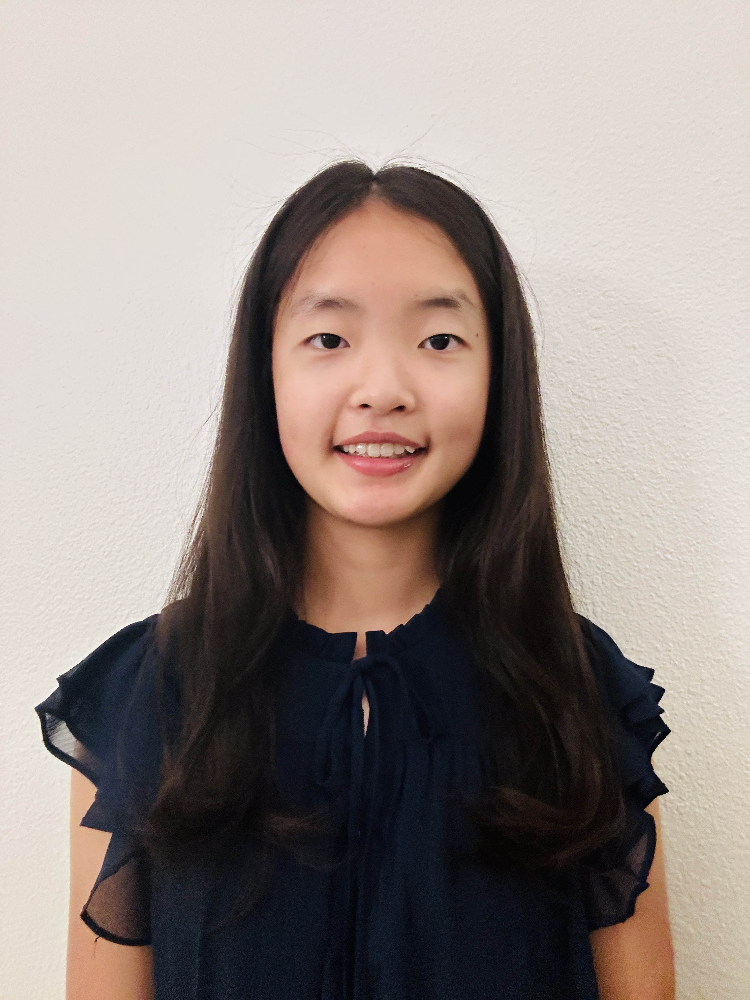
Audrey Kim
Co-PresidentHi! My name is Audrey, and I'm a junior at Whitney High School. My favorite STEM field is biology because I like learning about cells and the human body. I first got involved with Skits through the STEM Immersion Program, where I taught classes in math, chemistry, etc. Outside of Skits, I enjoy photography, listening to music, and reading. I'm looking forward to expanding Skits's programs and promoting equitable educational opportunities!
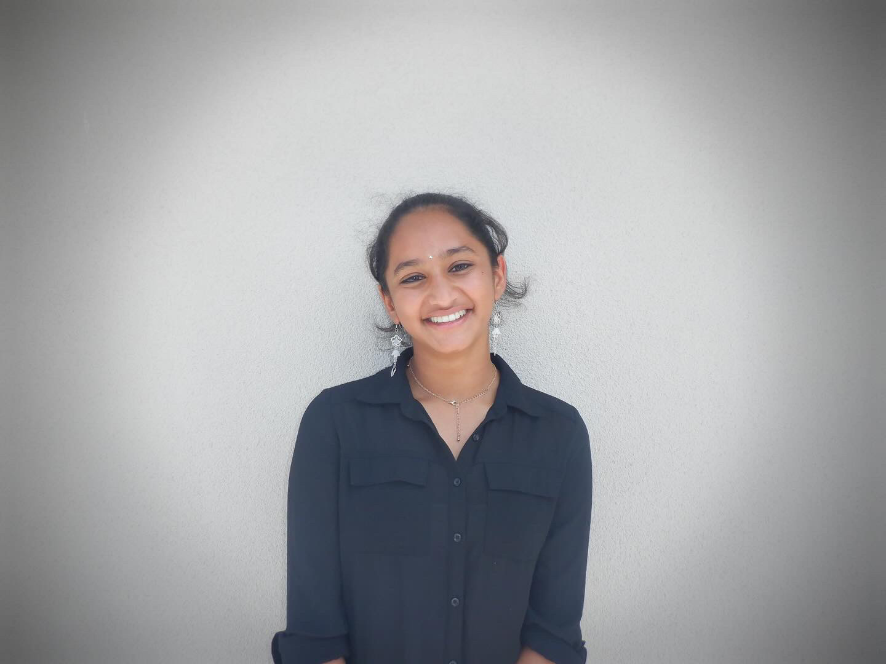
Mohana Sai
Vice President of ChaptersMy name’s Mohana, and I’m SKITS’ VP of Chapters! I’m a rising junior and I love engineering + biology. When I’m not crashing out over school or robotics, I’m usually going out for runs, doing puzzles, or hanging out with my family. I’m so excited to help expand SKITS for the next year and to work with a group of amazing people as my cabinet!
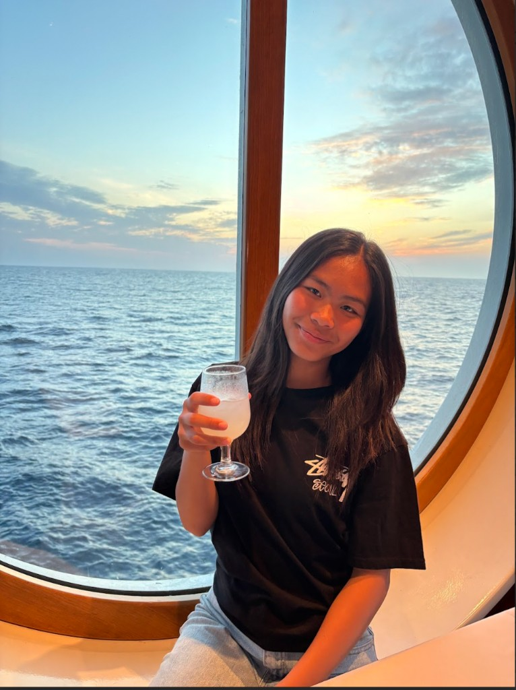
Sylvia Lin
Vice President of FinancesHi! My name is Sylvia Lin, and I am a rising Junior at Gahr High School and Vp of Finance. My favorite STEM field is biology because I’m interested in how the human body works and how medicine can can make a difference in one's live. The first time I worked with SKITS was as a volunteer teaching online math classes to students, where I learned communication and teaching skills. Later, I became the Co-Director of Science Kits, organizing hands-on STEM activities and lessons for students. Outside of SKITS, I enjoy running cross country/track, volunteering, and spending time with friends and family. I am looking forward too continue supporting students through STEM education and being part of the SKITS team.
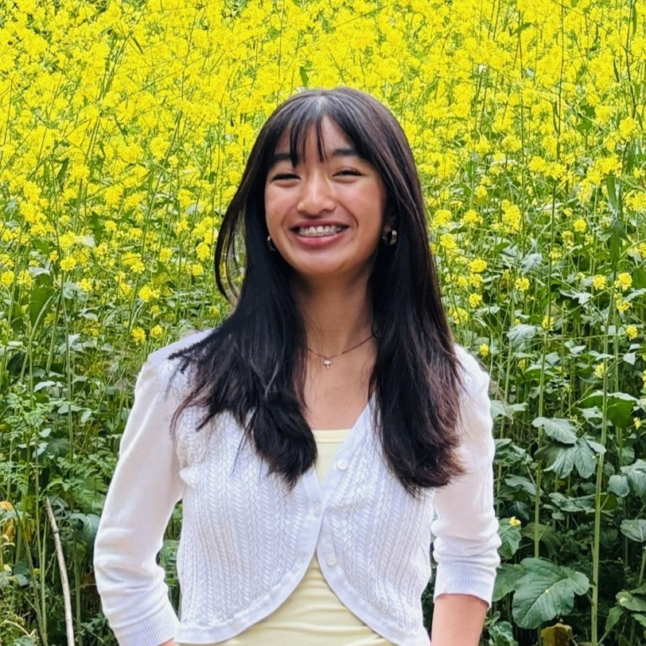
Mya David Fu
Vice President of ProgramsHi! My name is Mya David Fu, and I am an 11th grader at Gahr High School. My favorite STEM field is math, because I love the feeling of finally solving a difficult problem, or understanding a difficult concept, and I love how math feels like a puzzle where you’re just trying to find the missing piece. I first got involved with Skits as Director of Science Camps where I had a bunch of fun organizing our in person science camps, teaching kids, and doing cool experiments. Outside of Skits I enjoy reading, crocheting, playing tennis, performing in musical theater, and watching dramas. I am looking forward to creating more opportunities for kids to learn about and find joy in STEM through this year’s programs, and being a part of the team.
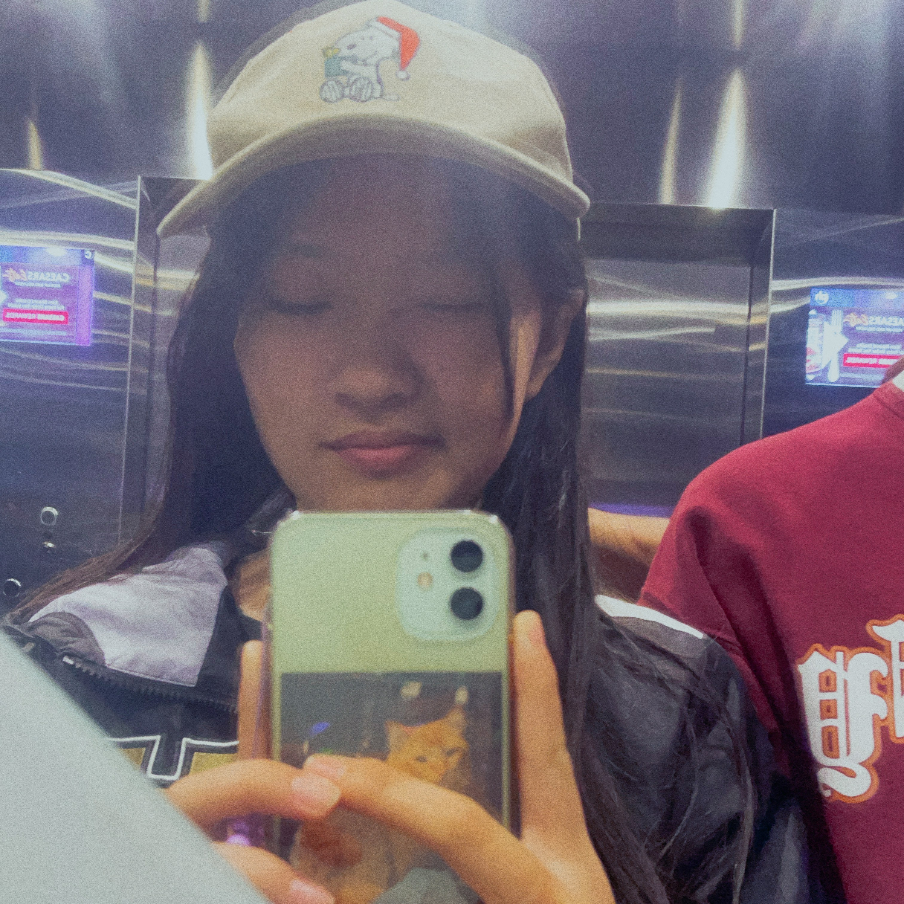
Katie Huynh
Vice President of MarketingHi! My name is Katie Huynh, and I am a senior at Whitney High School. My favorite STEM field is biomedical engineering. I aspire to a physician in the future which is why I enjoy medicine, but biomedical engineering adds that special touch of complexity and depth on top of that. I first got involved with Skits through our Stem Immersion Program where I was a teacher assistant and tutor. I was able to teach many younger students and that pushed me to join Skits. Eventually I was even able to become a Head of Stem Immersion Program. Outside of Skits, I enjoy many artistically-related activities such as drawing, photography, and pottery. I am looking forward to leading our marketing team to engage new people and their creativity through different types of media. I’m super excited to work with our team and see what we can accomplish!

Vishakha Sabat
Vice President of PartnershipsHi! My name is Vishakha Sabat, and I am an incoming senior at Whitney High School. My favorite STEM field is biology because my hope is to be a doctor in the future. I first got involved with SKITS through being the Director of SIP, where I organized 4 online STEM Immersion Program sessions, and worked with all the volunteers and students in order to ensure its smooth execution. Outside of SKITS, I enjoy dancing, singing, and baking. I am looking forward to expanding our organization through multiple outreach opportunities and spreading the love for STEM among the youth, having more and more people involved in all of our amazing programs. Looking forward to being part of the team as the Vice President of Partnerships!
Aditya Sood
Director of GrantsHello, I am Aditya Sood a 10th grader at Whitney. My favorite STEM field is math because of how diverse its topics are and how you can apply it to a variety of other fields. I got involved with Skits as a tutor, where I taught kids about medicine. Outside of Skits, I enjoy watching soccer and basketball. I am looking forward to helping grow Skits and encourage children to learn about STEM and being part of the team.
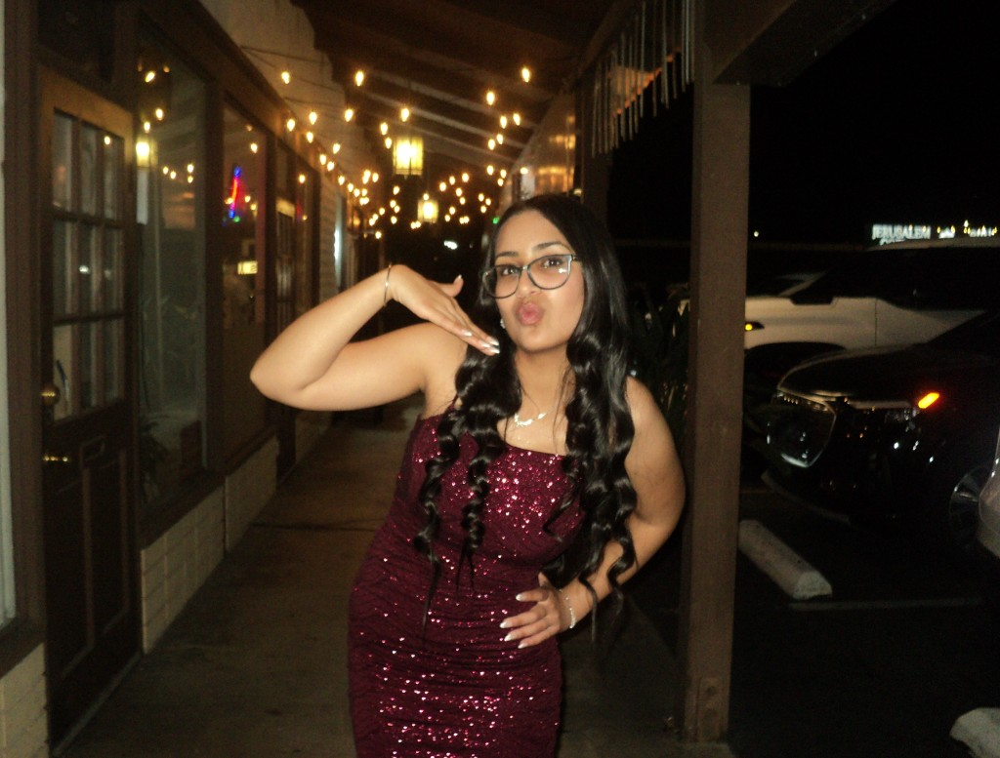
Sohava Kohli
Director of Fundraising EventsHey, my name is Sohava Kohli! I'm a rising junior at Whitney High School! I've always liked math and I hope to go into Finance in the future! I first got involved in SKITS last year as a tutor, where I learned how fulfilling it is to teach younger students! Outside of SKITS, I enjoy dance, going to the beach, and hanging out with my friends! I am looking forward to bringing my skill set and contributing to the team!
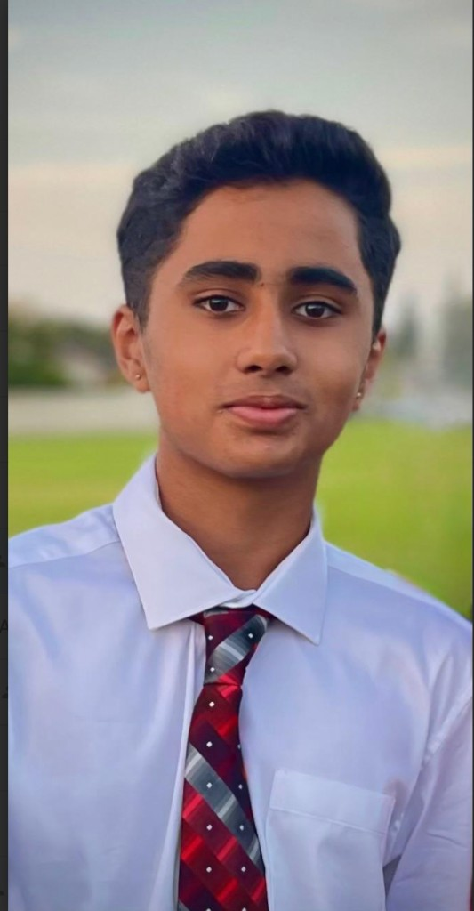
Aneesh Vasishta
Director of Chapter OutreachHi! My name is Aneesh Vasishta and I am a Sophomore at Whitney High School. I personally am inclined towards Computer science. I first got involved with Skits as being a teacher for the summer camp, where I gained valuable experience on how to be an efficient communicator, especially with children. Outside of Skits, I am an Indian Classical Vocalist, love playing Badminton and racing RC Cars. I am looking forward to meet new people, make new friends, and grow Skits to make a "larger than ever" impact.
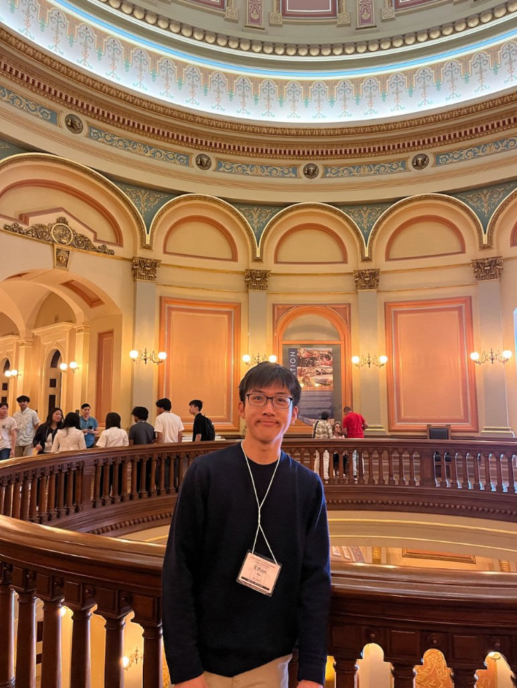
Ethan Na
Director of Community OutreachHi! My name is Ethan Na, and I am a junior at Gretchen Whitney High School. My favorite STEM field is psychology/behavioral science because it utilizes statistical modeling to provide an empirical basis for understanding collective behavior. I first got involved with Skits as a volunteer and I discovered a strong interest in community engagement. Outside of Skits, I enjoy researching historical documents, playing golf, trying different foods, sleeping, and writing nature haikus. I am looking forward to supporting our community by growing Skits and being part of the team.
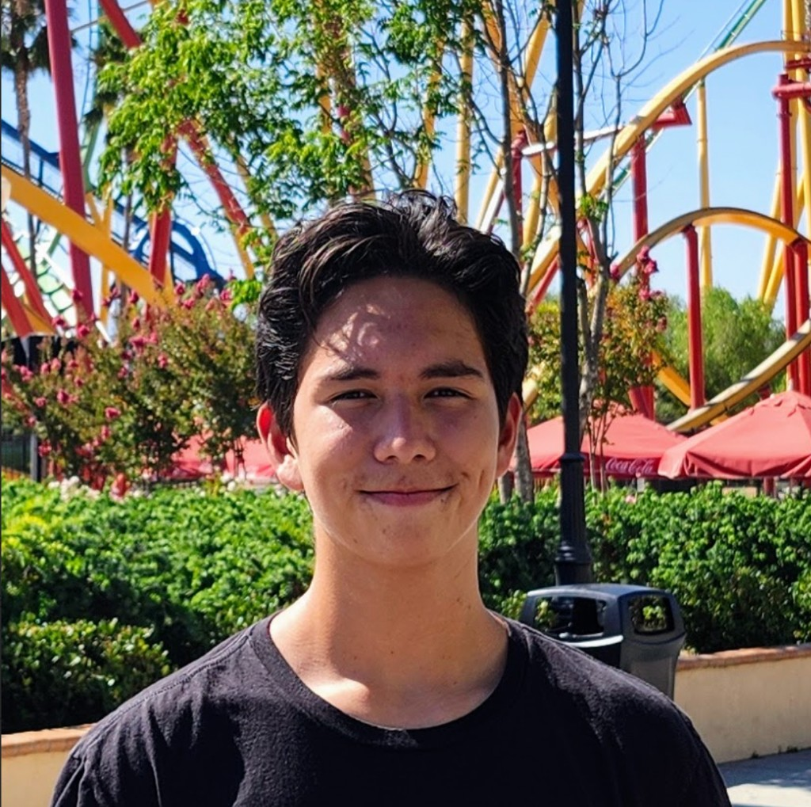
Nicholas Sequeira
Director of Community OutreachHello, my name is Nicholas Sequeira, and I am a Rising Junior at Whitney High School. My favorite STEM field is aerodynamics, due to its large involvement in Formula 1. I first got involved with SKITS through the STEM Immersion Program in 2025, where I volunteered during the summer. Outside of Skits, I enjoy singing, playing volleyball, and sim racing. I am looking forward to helping expand Skits' presence in our community and being part of the team.
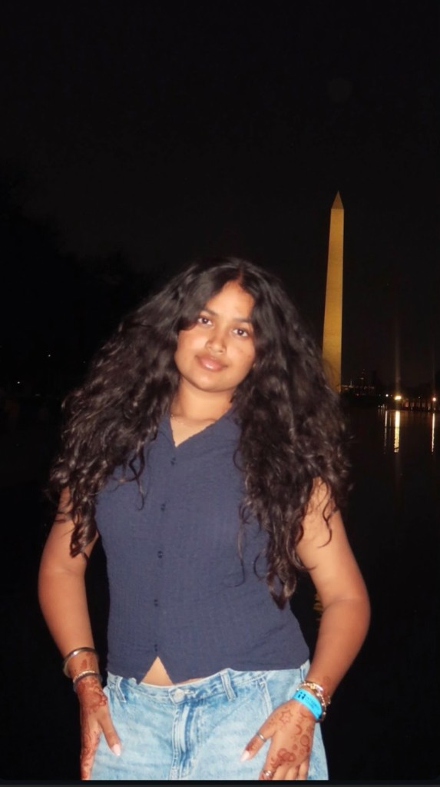
Saloni Banerjee
Director of Science CampsHello! My name is Saloni, and I am a Freshman at Whitney High School. My favorite STEM field is marine biology because it's a fun way of learning more on how we can save the planet while still interacting with wildlife! I first got involved with Skits through their SIP (STEM Immersion Program), where I learned how to keep kids engaged, create lesson plans, and work through different situations. Outside of Skits, I enjoy hip hop, reading, writing poetry, listening to music, Roblox, doom scrolling, and redecorating my bedroom. I am looking forward to working with new people, learning more everyday in all aspects, contributing my voice towards decisions with meaning, and just being part of the team!
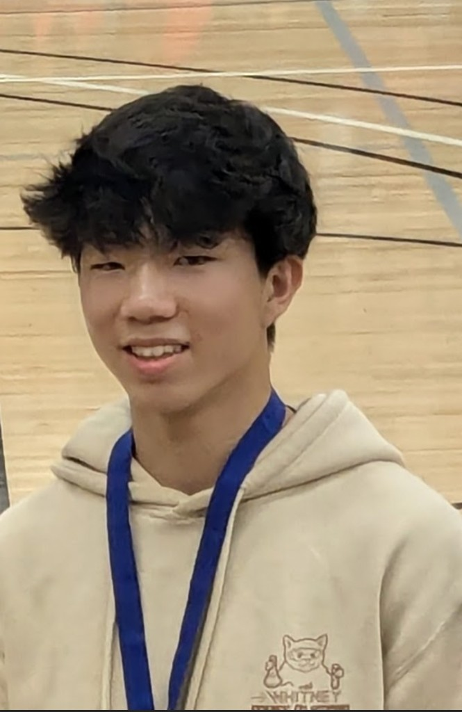
Matthew Chen
Director of Science CampsHi! My name is Matthew Chen, and I am a 10th grader at Whitney High School. My favorite STEM field is chemistry because it is a central science and connects all of the other aspects of STEM. I first got involved with Skits through a STEM camp in January, where I taught other students about density. Outside of skits, I enjoy piano, playing chess, running, basketball, hiking, and playing with my dog. I am looking forward to future SIPs, STEM camps, workshops, and summer sessions.
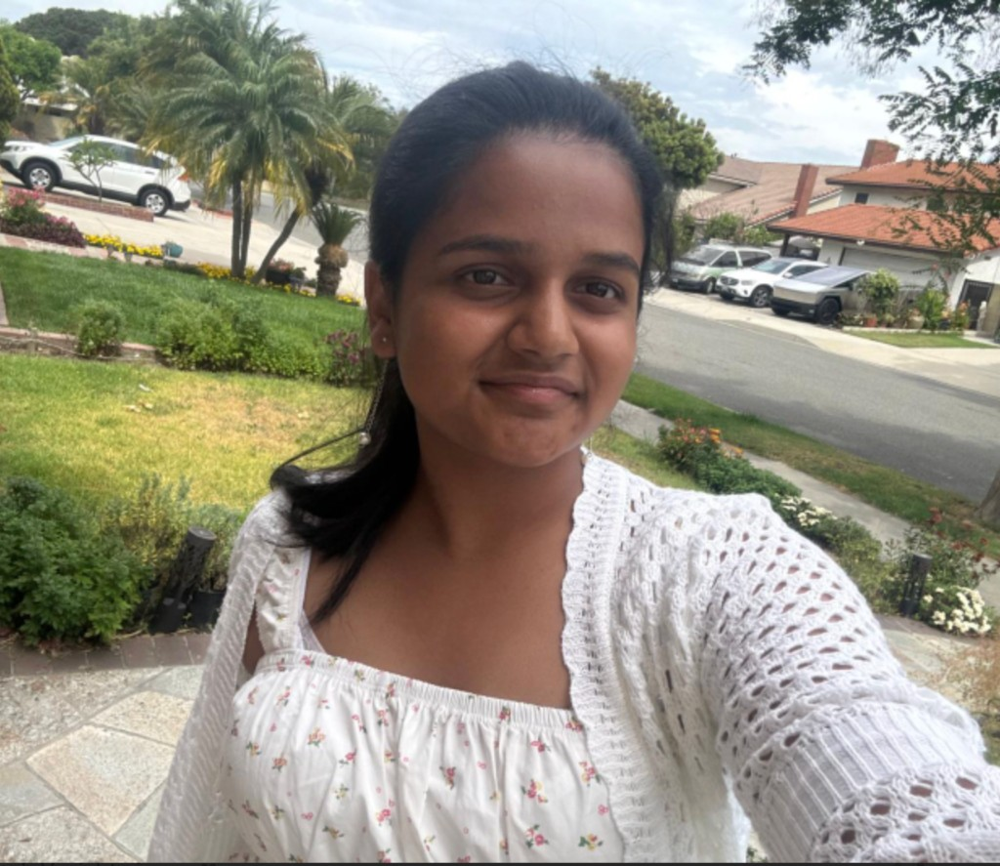
Sudheera Polu
Director of STEM Immersion ProgramHi! My name is Sudheera, and I am a junior at Whitney HS. My favorite STEM field is Aerospace Engineering and Avionics because I grew up with an early fascination with space and aviation, and I want to pursue a career that allows me to turn that wonder into reality. I first got involved with Skits when I taught an online session for elementary students about astronomy and careers in STEM. Outside of Skits, I enjoy cooking and making jewelry, which both give me a chance to unwind, focus on tiny details, and create things from scratch. I am looking forward to encouraging the next generation of kids to love STEM and being part of the team!
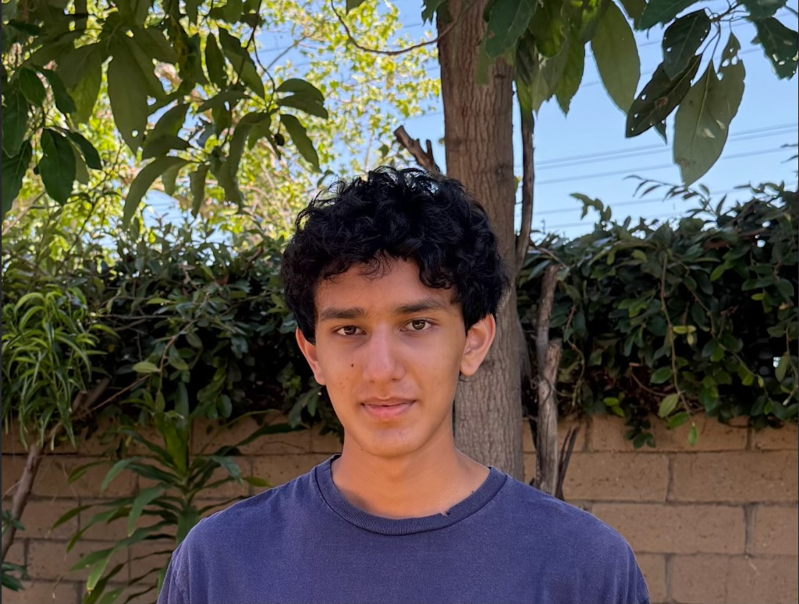
Arvin Grover
Director of STEM Immersion ProgramHello, my name is Arvin Grover, and I am a sophomore at Whitney high school. My favorite STEM field is physics because I like how it lets us understand the way fundamental parts of the world work. I first got involved with Skits through the Stem Immersion Program, where I taught math and chess to elementary schoolers. Outside of Skits, I enjoy playing basketball and swimming. I am looking forward to organizing a better SIP, and being a part of the team.
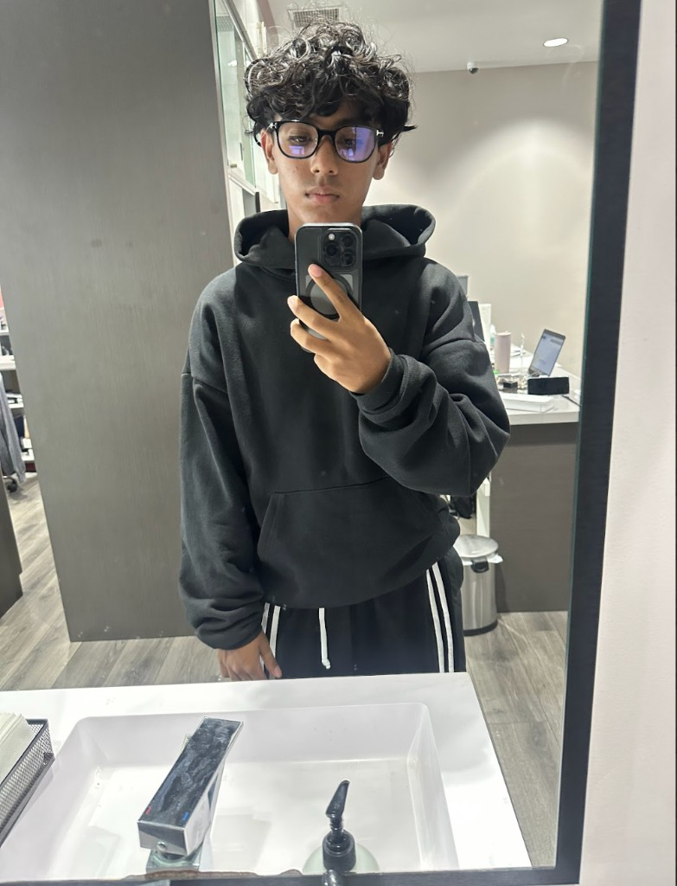
Rohail Mithani
Director of Skits AcademyHi! My name is Rohail Mithani, and I am a freshman at Whitney Highschool. My favorite STEM field is computer science because the power it has to create all of the media and information we see online is fascinating. I first got involved with Skits through being a Stem Immersion teacher during summer for Scratch, where I taught kids how to program in scratch. Outside of Skits, I enjoy walking, robotics, and cybersecurity. I am looking forward to creating an amazing and inclusive experience for kids in Stem Academy and being part of the team.
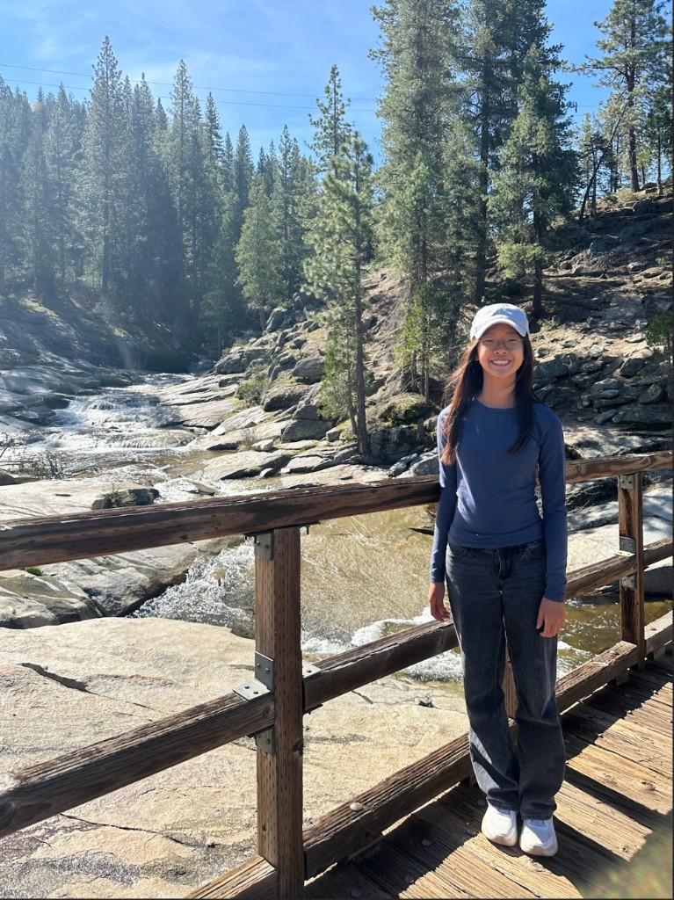
Alice Kim
Director of Skits AcademyHi! I'm Alice, and I am a rising freshman at Cerritos High School. I first got involved with SKITS as a tutor and teacher’s assistant in the STEM Immersion Program. Last year, I served as the Director of Publicity and Public Relations. These experiences have had a lasting impact on me, and I really enjoy teaching younger students about STEM. I especially like explaining STEM concepts and helping students develop a love for STEM as much as I do. Outside of SKITS, I enjoy hanging out with my friends and dancing. I look forward to being a part of this year’s cabinet!
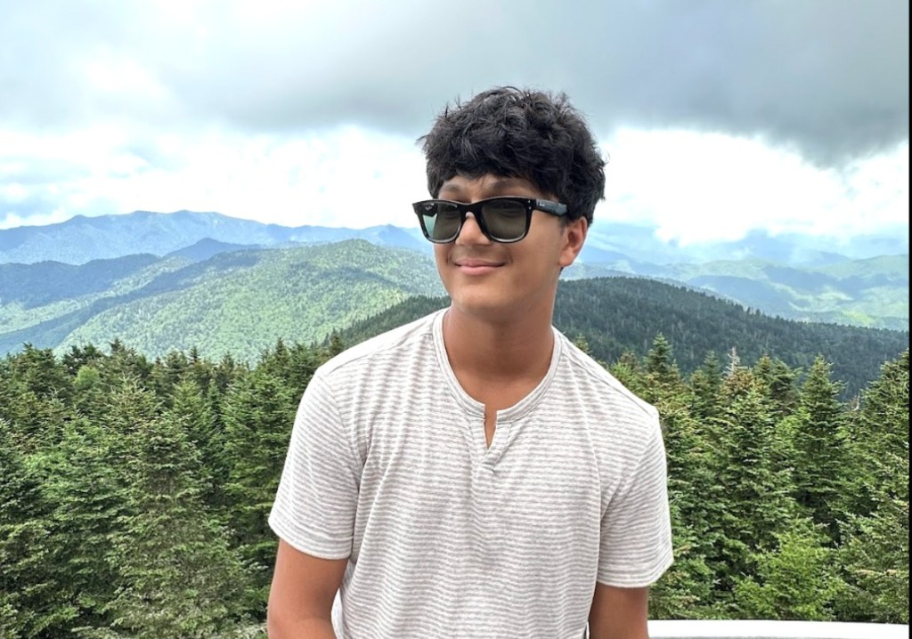
Shivam Bansal
Director of Website DevelopmentHi! My name is Shivam Bansal, and I am a Junior at Northview High School. My favorite STEM field is computer science because I love coding and hope to work as a software engineer in the future. I first got involved with Skits as the founder of the Georgia chapter, where I organized programs for underrepresented kids aspiring to work in STEM. Outside of Skits, I enjoy playing sports and video games. I am looking forward to helping SKITS increase the accessibility of its programs and helping more kids through online mediums like the website while also emphasizing computer science as an important aspect of our programs, and being part of the team.
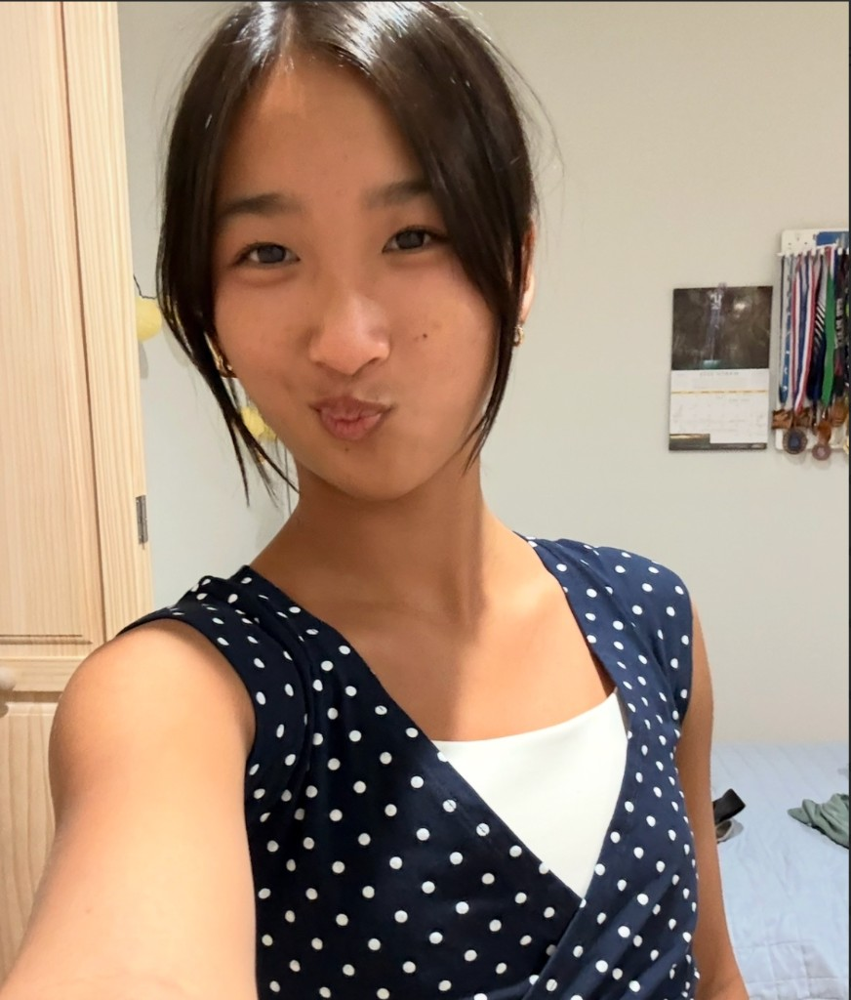
Jamie Huynh
Director of Social MediaHi! My name is Jamie, and I will be a junior at Whitney High School during the 2026-2027 school year. My favorite STEM field is statistics because I had enjoyed learning about this subject school. I got involved with Skits through volunteering in the Stem Immersion Program. Outside of Skits, I enjoy springboard diving and playing guitar with my band. I am looking forward to publicizing Skits through social media platforms and being a part of the team.
Olivia Geng
Director of Public RelationsHi, my name's Olivia Geng! I'm a freshman going on to sophomore, Class of 2029, at Whitney High School. My favorite STEM field is neurology because of the novelty in brain research right now in addition to my interest in anatomy. I first got involved through Skits with their Fall and Winter Science Immersion Programs, which mostly involved teaching students directly. I also enjoy traditional art, dragon-boating, badminton, and hanging out with my friends outside of school! I hope to help SKITS improve as an organization and learn more about various STEM fields along the way. Thank you for having me and I look forward to being part of the team!